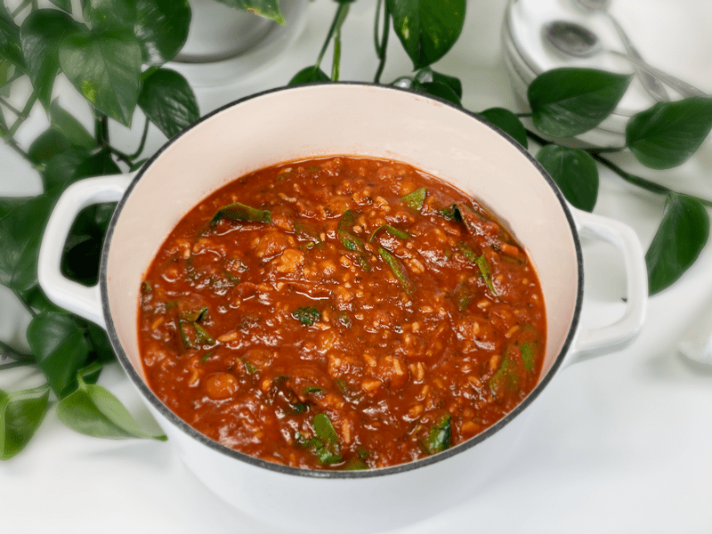

End of Week Soup Challenge #4 | Leftovers | Oil-Free
I love End of Week Soup Challenges, as they force me to think outside of my “recipe box.” Today’s soup turned out to be a true delight—for being a bunch of leftovers (playfully rolls eyes). If you savor the flavors of Italy and enjoy the meaty texture of gently steamed baby potatoes, the delicate presence of jasmine rice, with the added bonus of wilted spinach… then I invite you to come on over for bowl.

Why is it every time I turn around, it is the end of the week?! I remember when I was younger and people would tell me, “Wait till you get older, time will fly by!” Okay, I am older and I have noticed more than ever that time escapes me, but as of late, it has accelerated to warp speed and I can barely hold on.
 Anyway, today’s soup turned out delicious, though I have to admit that the leftovers were a bit challenging at first glance. But I trusted my process, gathered the leftovers into my arms, and headed to the studio kitchen. One by one, I set each container in front of me. Marinana sauce, jasmine rice, steamed baby potatoes, and spinach. I shrugged as I put each item into the cooking pot.
Anyway, today’s soup turned out delicious, though I have to admit that the leftovers were a bit challenging at first glance. But I trusted my process, gathered the leftovers into my arms, and headed to the studio kitchen. One by one, I set each container in front of me. Marinana sauce, jasmine rice, steamed baby potatoes, and spinach. I shrugged as I put each item into the cooking pot.
I brought it to a gentle boil, then reduced the heat to a low, giving it a good long simmer. Nothing really needed to be cooked, as each component was already cooked, but I wanted to simmer low and slow so all the flavors could fuse together. I decided that this was a good time to tackle the mound of dishes that I had created throughout the day.
Washing, rinsing, stacking…I was lost in thought as my hands moved in a robotic rhythm. My tummy started growling. Hungry? Why am I hungry? I shouldn’t be hungry. The soup! Oh goodness, it was then that I realized that this amazing aroma had filled the room.
I sneaked away from the dishes, scooped up a spoonful, blew on it, and gave it a good ol’ taste test. It was so full of texture and flavor. No wonder the aroma alone made my tummy growl with hunger. I took the pot into the house and placed it on the kitchen stove top, turned the heat to “Warming,” and went back to dish duty. About 40 minutes later I decided I wanted some soup for dinner, so I returned to the kitchen to find Bob hovering over the pot. I couldn’t see what he was doing, but I could hear the spoon clanking against the pot sides.
I asked him if he wanted to have a bowl of soup with me. He turned toward me, spoon in hand, red sauce in his beard, and with a sheepish look, he informed me that he ate half the pot already. He hadn’t really, but he’d clearly had his fill! I hope this post inspires and excites you to swing open the fridge doors, grab the leftovers, and create your own soup masterpiece. blessings, amie sue
© AmieSue.com